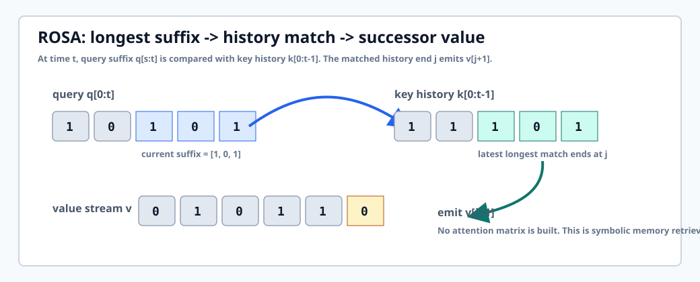
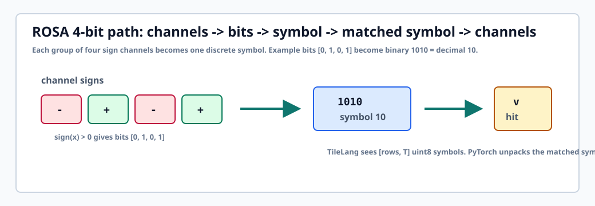
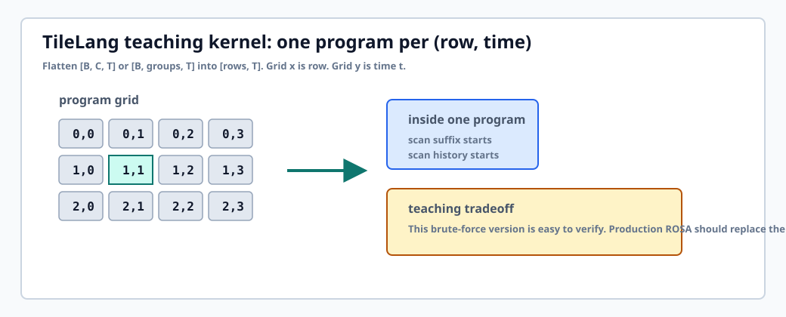
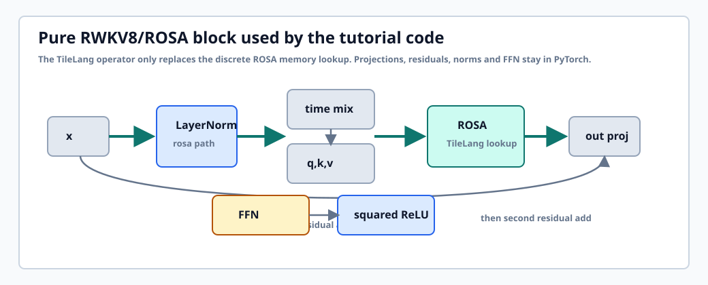

Start
0. 你会得到什么
如果你从来没有写过 RWKV 或 TileLang, 可以按本页顺序读. 每一节都只引入一个新概念: 先理解符号记忆的数学语义, 再理解代码如何表达它, 最后理解如何把这个算子放进一个 RWKV8 风格 block.
一个可运行的学习实现
rwkv8_tilelang.py 提供 rosa_suffix_match_ref,
rosa_suffix_match_tilelang, RWKV8Rosa1Bit,
RWKV8Rosa4Bit, RWKV8PureRosaBlock 和
TinyRWKV8RosaLM.
先语义正确, 再谈性能
CPU reference 使用朴素循环, 很慢但容易检查. TileLang kernel 采用同一语义,
在 CUDA 上按 (row, time) 并行计算每个输出符号.
这不是生产级 RWKV8
官方公开 RWKV8 仍处于快速实验形态. 本实现是教学版 ROSA 算子, 没有训练级自定义梯度, 也没有把后缀自动机状态工程化到增量解码.
python learn/rwkv/rwkv8/rwkv8_tilelang.py,
看输出里的 rosa out 和 hit mask, 再回来看第 3 节的匹配规则.
Mental Model
1. RWKV 的最小心智模型
Transformer 的注意力会显式比较当前 token 和所有历史 token. RWKV 系列想保留序列建模能力, 但把推理状态压缩成常数大小或更接近 RNN 的状态更新形式. 到 RWKV7, 公开论文强调动态状态演化. RWKV8 公开 demo 则把一个新方向推到台前: ROSA, 也就是符号级 suffix memory.
| 模型家族 | 记忆形式 | 读历史的方式 | 本教程关注点 |
|---|---|---|---|
| Transformer attention | KV cache 随序列长度增长 | 当前 query 和所有 key 做 softmax 加权 | 不是本文实现对象 |
| RWKV7 / linear attention family | 每 head 矩阵状态或 fast-weight memory | 递推更新状态, 再用当前 read vector 读出 | 作为背景理解 |
| RWKV8 / Heron + ROSA demo | 离散符号 suffix memory | 匹配 query suffix 在历史 key 中的出现位置, 输出后继 value | 本文实现 ROSA 的可验证教学版 |
换句话说, 本文不从大模型完整训练开始. 我们先实现最小问题:
给定离散序列 q, k, v, 对每个时间步输出一个匹配得到的符号.
这个小问题跑通后, 再把它包成 1-bit 或 4-bit layer, 最后接到 RWKV8 风格 block 里.
Public State
2. RWKV8 公开形态: 先接受它仍在实验
截至本文编写时, 官方公开材料更像一组快速迭代脚本, 而不是一个冻结的论文规格. 所以教程采用保守表述: 实现公开脚本中最容易独立验证的 ROSA 语义, 并明确标出哪些部分是教学取舍.
learn/, 属于学习实验. 它不注册为 XDL 主框架模型,
不承诺稳定 API. 如果以后要进入 xdl/, 需要重新整理配置, 梯度, checkpoint 和公共 API 边界.
ROSA
3. ROSA 后缀记忆, 从一个例子开始
ROSA 的读法可以先忘掉神经网络, 只看三条离散序列. 在时间 t,
我们取 q[0:t] 的所有 suffix, 到历史 k[0:t-1] 里找最长匹配.
若最长匹配在 key 历史里结束于位置 j, 输出 v[j+1].

suffix 表示 "当前上下文末尾刚刚发生了什么模式". 如果这个模式曾经在历史 key 中出现过, 那么它后面跟着的 value 可以作为一种符号级预测或记忆读出.
匹配片段本身说明 "历史上见过同样结尾". 后继 value 则表示 "上次这个模式之后发生了什么". 这和语言模型里的 next-token 直觉很接近.
3.1 先写最笨但最清楚的 reference
教学实现的 rosa_suffix_match_ref 用四层 Python 循环表达同一件事.
它的目的不是快, 而是成为 TileLang kernel 的语义锚点.
out, hit = rosa_suffix_match_ref(q_symbols, k_symbols, v_symbols)
print(out.tolist())
print(hit.tolist())
返回值有两个: out 是匹配到的 value symbol, hit 是这个位置是否命中.
4-bit 路径需要 hit, 因为 symbol 0 既可能是真命中, 也可能是 miss 的默认值.
Symbols
4. 1-bit 与 4-bit 符号化
神经网络里的 q, k, v 是连续张量. ROSA 需要离散 symbol.
本实现给出两条公开 demo 中最常见的教学路径: 1-bit 和 4-bit.
1-bit: 每个通道独立变成 0/1
对 [B, T, C] 的每个通道做 x > 0. 然后 reshape 成
[B * C, T], 每一行是一条独立符号序列. 匹配输出再 reshape 回
[B, T, C], 用 0 -> -emb, 1 -> +emb 映射回连续值.
4-bit: 四个通道打包成一个 0..15 symbol
4-bit 版本把四个 sign bit 组成一个 uint8 symbol, 例如 [0, 1, 0, 1]
变成二进制 1010, 也就是十进制 10. ROSA 对 group 序列匹配,
命中后再把 symbol 展开回四个通道.

RWKV8Rosa4Bit 默认 zero_on_miss=True.
这是为了避免 miss 的默认 symbol 0 被误解释成真实的 [-1, -1, -1, -1].
TileLang
5. 用 TileLang 写教学 kernel
TileLang 是 Python DSL. 你写 @tilelang.jit, T.prim_func,
T.Kernel, T.Tensor, T.serial 这样的结构,
TileLang 再把它降低到 GPU kernel. 本仓库本机版本是 0.1.10.

(row, t) 输出.
5.1 为什么这个 kernel 是 brute-force
真正的 ROSA 名字里有 suffix automaton. 后缀自动机可以把 "找最长 suffix 匹配" 做成在线状态更新. 但第一版教学 kernel 如果直接上自动机, 你会同时面对算法, 状态结构, TileLang 语法和调试难度. 所以本实现先采用 brute-force:
@tilelang.jit(pass_configs=pass_configs)
def _factory():
rows = T.symbolic("rows")
@T.prim_func
def kernel(q, k, v, out, hit):
with T.Kernel(rows, seq_len, threads=threads) as (row, t):
best_len = T.alloc_var(dtype=T.int32)
best_end = T.alloc_var(dtype=T.int32)
...
for q_start in T.serial(seq_len):
for k_start in T.serial(seq_len):
...
if best_len > 0:
out[row, t] = v[row, best_end + 1]
hit[row, t] = 1Code Tour
6. 新增代码导读
代码刻意分层. 最底层只处理 uint8 symbol. 中间层处理 1-bit/4-bit 符号化. 上层才是 RWKV8 风格的 PyTorch block.
rosa_suffix_match_ref
CPU 参考实现. 它定义权威语义: 最长 suffix, latest tie, 输出 successor value 和 hit mask.
build_rosa_suffix_match_kernel
TileLang kernel 工厂. seq_len, miss_value,
threads, target_arch 是静态构建参数.
rosa_suffix_match_tilelang
CUDA wrapper. 检查输入是 CUDA uint8 tensor, 分配 out 和 hit, 调用 TileLang kernel.
RWKV8Rosa1Bit
把连续 [B, T, C] 二值化, 展开成 [B*C, T], 运行 ROSA, 再映射到 +-emb.
RWKV8Rosa4Bit
把每 4 个通道打包成 uint8 symbol, 运行同一个 ROSA kernel, 再展开回通道并按 hit mask 清零 miss.
RWKV8PureRosaBlock
一个纯 ROSA + FFN block. 它包含 LayerNorm, time shift, QKV projection, ROSA, output projection 和 squared ReLU FFN.
TinyRWKV8RosaLM
最小语言模型壳子. 它用于检查 block 可以被普通 PyTorch 模型调用, 不代表可训练大模型配置.

6.1 为什么不直接手写完整大模型
因为 RWKV8 公开脚本还在迭代, 从零教程最怕把不稳定实验参数写成 "标准". 因此本页先固定一个最小闭环: 符号化 -> ROSA lookup -> block 前向 -> tiny LM 前向. 后续要做训练, 应该另起配置文件, 明确 tokenizer, loss, optimizer, gradient estimator 和保存格式.
Run
7. 运行与验证
这个目录不使用命令行参数解析库. Demo 的配置在 RWKV8RosaDemoConfig 里显式写出.
你可以直接编辑代码里的 config, 或者后续按仓库规范改成 YAML/OmegaConf.
7.1 运行 demo
python learn/rwkv/rwkv8/rwkv8_tilelang.py无 CUDA 环境下预期输出类似:
reference q : [1, 0, 1, 0, 1, 1, 0, 1]
reference k : [1, 0, 1, 1, 0, 1, 0, 1]
reference v : [0, 1, 0, 1, 1, 0, 1, 0]
rosa out : [0, 0, 1, 0, 1, 1, 0, 1]
hit mask : [0, 0, 1, 1, 1, 1, 1, 1]
tiny lm logits: shape=(2, 12, 64), dtype=torch.float32, device=cpu
CUDA unavailable; skip TileLang ROSA kernel demo7.2 运行测试
pytest tests/test_rwkv8_tilelang.py -q当前测试覆盖:
- 已知序列的 ROSA reference 输出.
- 4-bit pack/unpack round trip.
- 1-bit 和 4-bit layer 的 shape 与 hit mask.
- Tiny LM CPU 前向.
- TileLang wrapper 对非 CUDA 输入的错误提示.
7.3 有 CUDA 时怎么验证 TileLang
当 torch.cuda.is_available() 为 true, demo 会随机生成 uint8 symbol,
分别跑 CPU reference 和 TileLang backend, 再用 torch.testing.assert_close
做逐元素比较. 如果你想只测这个路径, 可以在 Python 中直接调用:
from learn.rwkv.rwkv8.rwkv8_tilelang import (
rosa_suffix_match_ref,
rosa_suffix_match_tilelang,
)
q = torch.randint(0, 2, (32, 16), device="cuda", dtype=torch.uint8)
k = torch.randint(0, 2, q.shape, device="cuda", dtype=torch.uint8)
v = torch.randint(0, 2, q.shape, device="cuda", dtype=torch.uint8)
out_ref, hit_ref = rosa_suffix_match_ref(q, k, v)
out_tl, hit_tl = rosa_suffix_match_tilelang(q, k, v)
torch.testing.assert_close(out_tl.cpu(), out_ref.cpu(), rtol=0, atol=0)
torch.testing.assert_close(hit_tl.cpu(), hit_ref.cpu(), rtol=0, atol=0)7.4 只验证 TileLang 编译
有些环境有 nvcc 但没有可见 GPU. 这种情况下可以只验证 DSL 是否能被 TileLang
降低并编译成 kernel. 如果默认缓存目录不可写, 把 TILELANG_CACHE_DIR 指到
/tmp. 如果自动架构检测失败, 手动传入 target_arch.
PYTHONDONTWRITEBYTECODE=1 TILELANG_CACHE_DIR=/tmp/tilelang-cache-xdl python - <<'PY'
from learn.rwkv.rwkv8.rwkv8_tilelang import build_rosa_suffix_match_kernel
kernel = build_rosa_suffix_match_kernel(seq_len=4, target_arch="sm_80")
print(type(kernel))
PYimportlib.util.spec_from_file_location
加载学习脚本, 因为 learn/ 不是正式 Python package. 这是有意保持的边界.
Next
8. 下一步怎么从教学版走向工程版
如果你已经能读懂现在的代码, 下一步不是盲目扩大模型, 而是逐层替换瓶颈. 下面这张路线图按收益和难度排序.
RWKV-v8/ 脚本和 README.
Sources
9. 资料来源与本页状态
本页结合了仓库内已有 README.md, 本地 TileLang 示例, 以及官方公开仓库信息.
由于 RWKV8 和 TileLang 都可能继续变化, 涉及生产训练前应再次核对最新代码.
- BlinkDL/RWKV-LM 官方仓库
- RWKV-v8 README
- RWKV-8.md
- TileLang 官方仓库
- 本仓库 TileLang FlashAttention 示例
- 本仓库 TileLang mHC 示例
learn/rwkv/rwkv8/rwkv8_tilelang.py
和 tests/test_rwkv8_tilelang.py. 本机无 CUDA, 因此已验证 CPU reference 和 PyTorch block,
TileLang GPU kernel 需要在 CUDA 环境中再跑一次逐元素对比.